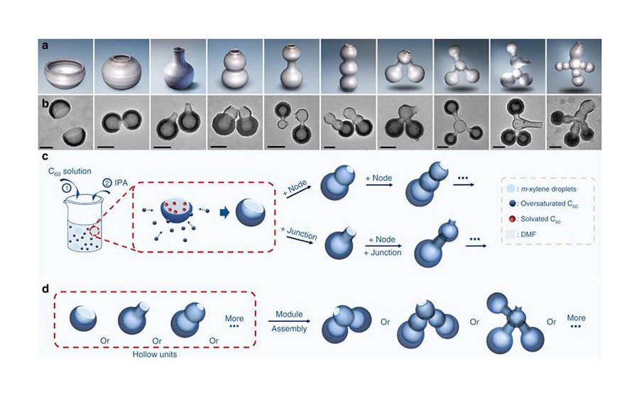
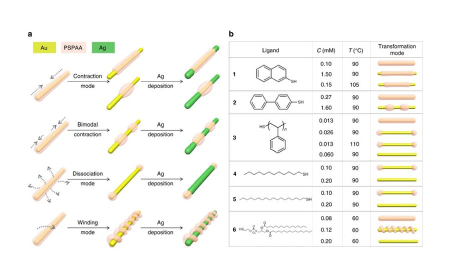
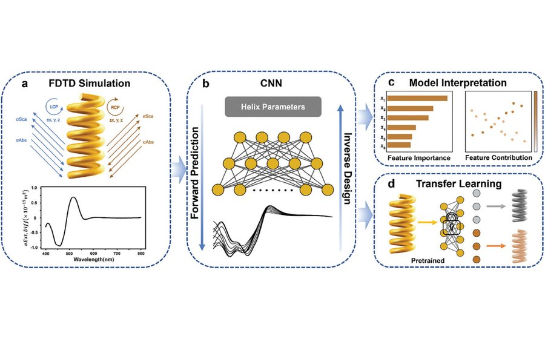
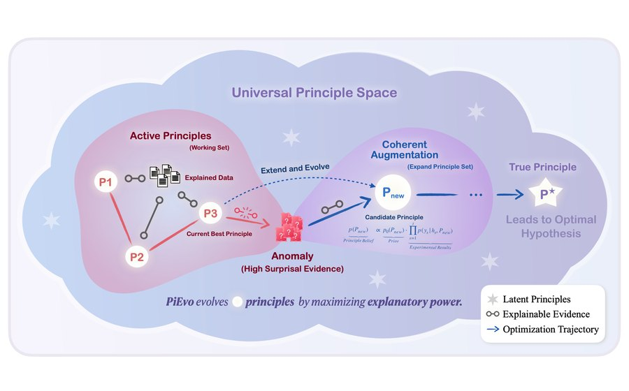

01
Complex nanostructures
Solid-solid interfaces, hollow units, core-shell, Janus, and assembled nanoparticles with programmable geometry.
Westlake Nanosynthesis Laboratory
We develop controllable routes to complex nanostructures, uncover their formation mechanisms, and translate synthetic precision into catalysis, sensing, biointerfaces, chirality, and AI-assisted materials discovery.
What We Do
The group builds methods that move nanomaterials beyond conventional crystal-facet control: multicomponent architectures, low-symmetry structures, assembled motifs, chiral forms, and data-guided discovery principles.

Solid-solid interfaces, hollow units, core-shell, Janus, and assembled nanoparticles with programmable geometry.

Active surface growth, etching, diffusion, and ligand effects that govern competition during nanoparticle formation.

New synthetic tools for nanohelices, low-symmetry crystals, plasmonic response, and optical activity.

Uncertainty-aware principle search that turns experimental evidence into evolvable materials hypotheses.
What We Are Publishing

Who We Are
Current members include postdoctoral researchers, research staff, and graduate researchers working together on synthetic methodology, mechanistic analysis, functional materials, and computational discovery.
Latest News
Principle-evolvable scientific discovery via uncertainty minimization adds an AI direction to the lab's materials work.
Erythrocyte membrane coating stabilization on nanoparticles reports enhanced anti-alpha-hemolysin immunity.
In situ observation of active surface etching in gold nanoplates clarifies intermediate ligand effects.
Contact